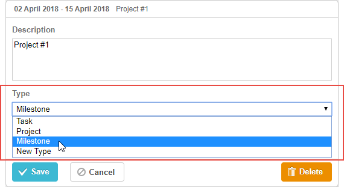

Available only in PRO Edition
This functionality is available in the PRO Edition only.
A select box for changing the type of a task.
The control loads options from the
types object and has the default onchange handler. Everything else is identical to Select Control.

gantt.config.lightbox.sections = [
{name:"description", height:38, map_to:"text", type:"textarea", focus:true},
{name: "type", type: "typeselect", map_to: "type"}, {name: "time", height: 72, type: "duration", map_to: "auto"}
];
Related sample: Projects and milestones
To add the typeselect control to the lightbox, just add a section to the lightbox configuration as in:
gantt.config.lightbox.sections = [
{name:"description", height:38, map_to:"text", type:"textarea",focus:true},
{name: "type", type: "typeselect", map_to: "type"}, {name: "time", height: 72, type: "duration", map_to: "auto"}
];
Related sample: Projects and milestones
gantt.locale.labels.section_type = "New label for the section";
The following properties are mostly important and commonly set for the typeselect control (see the full list here):